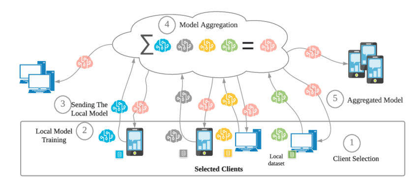

Introduction to Federated Learning
Federated Learning is a distributed machine learning approach that allows multiple devices or servers to
collaboratively train a model without sharing their raw data. This method ensures data privacy and
security, as the data remains on the local devices, and only model updates are shared and aggregated to
improve the global model.
How Federated Learning Works
- Client Selection: In this step, a set of devices (clients) is selected to
participate in the training process. These devices possess local datasets, which they use to train
the model.
- Local Model Training: Each selected device trains the model using its local data.
The training process occurs independently on each device, without any data leaving the device.
- Sending the Local Model: Once the training is completed, each device sends its
updated model weights (not the data) to a central server.
- Model Aggregation: The central server aggregates the model updates from all the
devices, combining them to form a new global model. This step ensures that the knowledge gained from
each device is included in the updated global model.
- Model Distribution: The aggregated global model is then sent back to the devices,
where the process can be repeated, further refining the model.
Benefits of Federated Learning
- Privacy-Preserving: Data never leaves the device, ensuring that sensitive
information remains private.
- Reduced Data Transfer: Only model updates are shared, reducing network bandwidth
requirements.
- Collaborative Learning: Multiple devices can contribute to improving the global
model, leading to more accurate and robust results.
- Scalable: Federated Learning can work with a large number of devices, making it
suitable for large-scale applications.
Federated Learning Workflow Diagram
The following diagram illustrates the workflow of Federated Learning:

This diagram shows the process where local models are trained on individual devices, aggregated by the
central server, and then distributed back to the devices for further refinement.